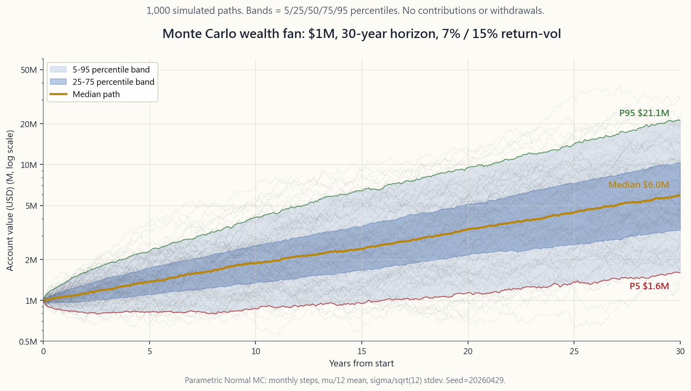
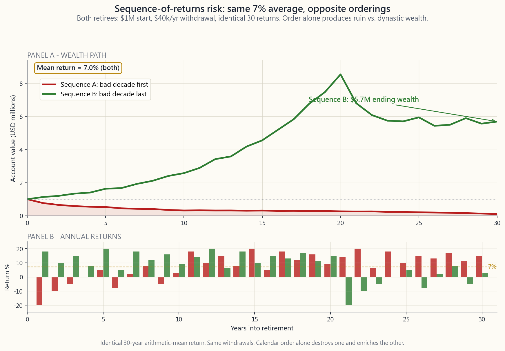

Side Lesson 28: Monte Carlo — Projecting Retirement and the Sequence-of-Returns Trap
1. Why This Is Important
Every retirement projection you see online — the bank's planner, the 401(k) provider's "you will have $X at 65" widget, the financial advisor's slide deck — runs the same arithmetic. Plug in a starting balance, an assumed return, a horizon, push the button, get one number. "At 7% per year for 30 years, your $1M becomes $7.6M."
That number is a lie. Not because the math is wrong — 1.07^30 does
equal 7.61 — but because the markets you actually live in are not a
constant-return savings account. They deliver +30% in some years
and -25% in others. The calendar matters: getting the bad years
first versus last can be the difference between dying with
money in the bank and running out of it at age 78. The single-number
projection silently assumes the average returns arrive in a smooth,
well-behaved order. They never do.
Four reasons to learn Monte Carlo simulation properly:
retirees with identical 30-year average returns can finish with $0 or $4M depending only on the order in which the returns arrived. This is the single most under-appreciated risk in personal finance.
historical bootstrap on US data 1926-1976. Modern updates from Pfau (2020), Kitces, and Morningstar using lower forward-looking returns put the safe rate closer to 3.0-3.5%. If your plan assumes 4% you may be 50 basis points too aggressive.
median.** Planning to the median is planning for 50/50 success. Monte Carlo gives you the distribution — the shape and tail — not just a point estimate.
is the entire game in withdrawal phase. A 30% drawdown in accumulation phase is a buying opportunity. The same drawdown in year three of retirement is a permanent reduction in lifetime spending capacity.
2. What You Need to Know
2.1 Assumed Return + Assumed Vol vs. Monte Carlo
The traditional retirement projection is a single line:
$$ W_T = W_0 \cdot (1 + \mu)^T - C \cdot \frac{(1+\mu)^T - 1}{\mu} $$
where $W_0$ is your starting balance, $\mu$ is the assumed return, $T$ is the horizon, and $C$ is the annual withdrawal. Plug in $W_0 = \$1\text{M}$, $\mu = 7\%$, $T = 30$, $C = \$40k$ and the formula spits out roughly $\$3.5\text{M}$ ending balance. Done.
The problem is that $\mu$ is not a number, it is a distribution. The S&P 500's long-run nominal return is roughly 10% with a standard deviation of 16%. In any single year the return is most often somewhere between -22% and +42% (one-sigma band). Over 30 years the average clusters near 10%, but the path — the order in which the years arrive — varies enormously.
Monte Carlo simulation replaces the single line with **thousands of randomized lines.** In each simulation:
distribution matching your assumed return and vol.
contribution/withdrawal schedule.
After 1,000 to 10,000 simulations you have a distribution of outcomes. The 50th percentile is your median expected wealth. The 5th and 95th percentiles bracket the realistic range. The fraction of paths that ended above zero is your success probability.
A 95% success rate on a $40k/yr withdrawal plan is much more honest than "your expected balance is $3.5M." The first number tells you the plan works; the second tells you only that on average it works, while leaving you to discover for yourself that on average you only die once.

2.2 Sequence-of-Returns Risk — The Killer
Two retirees both retire at 65 with $1M and the same plan: withdraw $40k inflation-adjusted per year. Both experience the *exact same 30 annual returns.* The only difference is the order. Retiree A gets a bad first decade; Retiree B gets a bad last decade.
Mathematically they have identical arithmetic mean returns — the calendar can be reshuffled freely without changing the average. But the wealth paths are completely different. The reason is brutal: **withdrawals from a depressed portfolio sell more shares than withdrawals from an inflated portfolio.** A $40k withdrawal at $700k forces you to liquidate 5.7% of remaining shares; the same $40k at $1.4M is only 2.9%. The shares sold during a drawdown are permanently gone — they cannot participate in the eventual recovery.
Run a constructed example: first decade averages -5% per year, last two decades average +13% per year. Arithmetic mean over 30 years hits 7%. Run the opposite ordering: +13% for 20 years then -5% for 10. Same mean, same volatility, same end-of-history return.
- Sequence A (bad early): Portfolio bleeds out fast. Year-10
- Sequence B (bad late): Portfolio compounds aggressively for
Same mean. Same vol. Same withdrawals. Same starting balance. **The difference between dying broke and leaving generational wealth is the calendar order alone.** This is sequence-of-returns risk, and no single-number projection captures it.

The retirees most exposed to sequence risk are those in the first five to ten years of withdrawal, when the balance is largest and withdrawals are nibbling at the principal. After year 15-20 the sequence risk attenuates — surviving portfolios are usually large enough that further drawdowns cannot ruin them.
2.3 The Bengen 4% Rule and Its Modern Updates
In 1994 William Bengen, a financial planner in southern California, published Determining Withdrawal Rates Using Historical Data in the Journal of Financial Planning. He ran a then-novel exercise: **bootstrap 30-year retirements from the actual historical sequence of US returns 1926-1976.** For each starting year he asked the same question: what is the highest constant inflation-adjusted withdrawal rate that survived all 30 years?
The answer was 4.15% for a 50/50 stock-bond portfolio. Bengen rounded down to 4.0% as a "safe" rule of thumb. The rule rapidly displaced earlier industry conventions (most of which assumed withdrawal rates of 6-7% based on average returns, ignoring sequence risk).
The 4% rule is calibrated to **the worst historical 30-year period in US data,** not the median. The worst case in Bengen's window was a retirement starting in 1966, just before the stagflation decade of 1968-1981. That sequence — bad first 15 years, recovery from 1982 onward — is the canonical sequence-of-returns nightmare. A portfolio that survived 1966-1995 will, by Bengen's logic, survive any other 30-year window in the historical sample.
The Trinity Study (Cooley, Hubbard, Walz 1998) ran the same exercise on a wider date range and slightly different portfolios and confirmed the 4% number with 96% historical success rate at 30 years on a 50/50 stock-bond mix. The number stuck.
But: the 4% rule is historical-bootstrap-derived, which embeds two huge implicit bets:
In April 2026 neither assumption is on solid ground. Forward-looking expected returns from sober sources (Vanguard, BlackRock, GMO, Research Affiliates) cluster around 5-7% nominal for US equities and 4-5% for 10-year Treasuries — well below the historical numbers Bengen used. Wade Pfau's 2020 update *Safe Withdrawal Rates: A Comprehensive Examination* recalculated the Bengen exercise using forward-looking expected returns and found the safe rate falls to 3.0-3.5%. Morningstar's 2024 State of Retirement Income report converged on 3.7% for new retirees under current valuations.
The practical translation: if you used the 4% rule to set your nest-egg target, you may be undersized by 15-30%. A retiree who wanted $80k/year with the 4% rule needed $2M. Under a 3.5% rule the target is $2.29M — a 14% increase in the required nest egg. Under 3.0% it is $2.67M — a 33% increase.
2.4 Bootstrap vs. Parametric Monte Carlo
There are two flavours of Monte Carlo, and the choice matters more than people realise.
Parametric MC. Assume returns follow a parametric distribution — most often Normal with assumed $\mu$ and $\sigma$. Generate random samples from the distribution. Run forward.
- Pros: simple, fast, infinitely-extendable, the math is clean.
- Cons: the distribution assumption is wrong. Real equity
Bootstrap MC. Sample with replacement from the actual historical sequence of returns. No distributional assumption — the data generates the distribution.
- Pros: captures fat tails, captures observed correlation structure
- Cons: limited by the historical sample. The US dataset has only
A practical compromise: block bootstrap with 5- to 10-year blocks. This preserves observed within-block correlation and serial structure while still allowing recombination. It is the technique Pfau, Kitces, and most academic researchers default to.
The retail tools (Vanguard's projection tool, Schwab's, the typical robo-advisor) usually run parametric Normal MC because it is faster and easier. The underestimate of tail risk is real but typically small at 30-year horizons (the central limit theorem helps), and the difference between 3% and 5% safe withdrawal rate is dominated by the return assumption, not the sampling method.
2.5 Reading the Output — Probability of Success
The Monte Carlo output you actually use is not the median ending wealth, it is the success rate — the fraction of simulations where the plan does not run out of money before the end of the horizon.
Industry conventions:
| Success rate | Verdict |
|---|---|
| ≥ 95% | Plan is over-funded. Consider spending more or retiring earlier. |
| 85-95% | Solid plan. Normal target. |
| 70-85% | Plan is risky. Build flexibility into withdrawals. |
| < 70% | Plan is broken. Save more, work longer, or spend less. |
Two crucial nuances:
failed plans failed at year 23 (recoverable with part-time work) or at year 5 (catastrophic). The conditional-on-failure analysis is just as important as the headline number.
against the 50th percentile, not against the goal. A plan with a 95% success rate but a 5th-percentile ending balance of $50k leaves you with no margin in the bad scenarios. A plan with 90% success but a 5th-percentile ending balance of $1M is far more robust to surprises.
The interactive lab on this page exposes both numbers — the success rate and the 5/50/95 percentile terminal wealth. Practice reading them as a pair.
2.6 Common Pitfalls
Three modelling mistakes that show up in nearly every retail retirement projection:
skewed and fat-tailed. A Normal model with $\sigma = 16\%$ says a single-year -32% return (-2 sigma) happens once every 44 years. The empirical record has it happening every 15-20 years on average, plus the occasional -45% (1931, 2008-09 cumulative). See Week 42.
regime had realized vol of 6%; 2008 had 40%. Models that hold $\sigma$ constant at 16% smooth over the regime shifts entirely and hide the joint event of "your portfolio drops 35% in the year you start withdrawing." Vol-of-vol is a real risk that parametric MC ignores.
stock-bond correlation made 60/40 portfolios look bulletproof in simulation. The 2022 correlation flip to +0.3 broke every 60/40 backtest in real time. Models that assume a static correlation matrix between asset classes will under-state crisis correlations and over-state diversification benefits — exactly the wrong direction for retirement planning.
The fix for all three is the same: **use bootstrap or block-bootstrap on real historical data,** and stress-test the output by re-running with the worst observed historical regime as the starting point. Ask the planner: "what is the success rate if I retire into another 1966?"
2.7 Building Sequence-Risk Robustness Into a Plan
Three structural defences against sequence-of-returns risk that work in real life:
in cash + short Treasuries outside the equity sleeve. In a bear market, withdraw from the buffer instead of selling depressed equity. Refill the buffer in good years. Reduces forced liquidation at lows; small drag on long-run return (~30-50bps).
forever, let withdrawals scale with portfolio balance. The simplest version (Guyton-Klinger guardrails) cuts withdrawals by 10% if the current rate exceeds 5% of the portfolio after a bad year, and ratchets up by 10% if it drops below 4%. Pfau's research finds this lifts the safe initial rate from 3.5% to 4.5-5% with the same success probability.
to 70% over the first 15 years. This is counterintuitive — most people de-risk over time — but it explicitly reduces exposure to the highest-sequence-risk window and increases it during the late-retirement window when sequence risk has attenuated. Kitces and Pfau (2014) showed it improves success probability by 2-4 percentage points on the same withdrawal rate.
The barbell, applied to retirement: keep two years of cash ironclad, let the equity sleeve be aggressive. The bond/cash side is for survival; the equity side is for return. Mixing them at 60/40 throughout retirement is the worst of both worlds — too much volatility for the early years, too little growth for the late years.
3. Common Misconceptions
1. "Monte Carlo gives precise answers." It gives a probability distribution, which is much more honest than a point estimate, but the distribution is only as good as the input assumptions. Garbage return assumptions produce garbage Monte Carlo output.
2. "If I average 7% per year I will hit the 7% line." No. The median of a 30-year 7%-mean path is roughly the 7% line, but your particular path will diverge from the median by a factor of 2-3x in either direction.
**3. "Sequence risk only matters in the first few years of retirement."** It matters most then, but a bad decade in years 5-15 is also fatal. The risk window extends roughly through year 15-20 of withdrawals.
4. "More simulations means more accurate results." Beyond about 1,000-5,000 simulations the Monte Carlo error is dominated by model error (wrong distribution, wrong correlations) rather than sampling error. Running 100,000 sims of a misspecified model just gets you wrong answers with more decimal places.
5. "The 4% rule is a law of nature." It is one specific result from one specific bootstrap on one specific dataset. Modern updates using forward-looking returns put the safe rate at 3.0-3.5%.
6. "If my plan has a 95% success rate I'm safe." Success rate is binary. The 5% of failed paths can fail catastrophically (year 5) or marginally (year 28). Always look at the conditional-on- failure year of ruin alongside the headline rate.
7. "Monte Carlo accounts for everything." It accounts for return volatility within the assumed model. It does not account for: model risk, regime shifts, your own behavioural failures (panic-selling in March 2020), longevity uncertainty, healthcare cost shocks, or divorce. Real retirement planning is Monte Carlo plus stress tests plus margin.
8. "Lowering the withdrawal rate fixes the plan." It fixes the math. It does not fix the lifestyle problem of having saved for an $80k/yr retirement and now needing to live on $60k/yr. Plan-fixing should preferentially happen before retirement, not after.
9. "I'll just adjust if returns are bad." Sometimes you can, sometimes you cannot. Health, family obligations, and the labour market all constrain late-life income flexibility. Variable withdrawal rules (Guyton-Klinger) build this adjustment into the plan structurally rather than relying on improvisation.
10. "Monte Carlo replaces backtesting." It complements backtesting. Backtests show what the past actually did; Monte Carlo shows what could happen given assumed dynamics. A plan that survives both a bootstrap of 1929-1959 and a parametric MC at forward-looking returns has been stress-tested two ways. A plan that only survives one has not been.
4. Q&A
Q1: How many simulations should I run?
1,000 to 10,000. Below 1,000 the percentile estimates are noisy (the 5th percentile in a 100-path simulation has a wide confidence interval). Above 10,000 the marginal information is small, and runtime grows linearly. Most retail tools run 1,000; institutional planners run 10,000 or more.
Q2: What return assumption should I use?
For US equities in April 2026: 5-7% nominal expected return (Vanguard CMA: 4.5-6.5%; BlackRock: 6-7%; GMO 7-year: ~3% real for US large-cap, more for international and value). For bonds: roughly the current 10-year yield (4.0-4.3% in April 2026) plus 0-50bps for credit risk. Do not use the historical 10% S&P average — it embeds the 1980-2000 valuation expansion that is unlikely to repeat.
Q3: What volatility assumption?
S&P 500 long-run vol is roughly 16% nominal. A balanced 60/40 portfolio is roughly 10-11%. The lab on this page defaults to 15%, which is a touch optimistic for 100% equities but realistic for the tilted-equity portfolios most retirees actually hold.
Q4: Should I model inflation?
Yes. The simplest method is to deflate everything to today's dollars: use real expected return (subtract 2-2.5% expected inflation from the nominal) and keep withdrawals fixed in today's dollars. The output is then directly comparable to your current spending. The lab does this implicitly — change the inputs to real returns and the picture works.
Q5: How do I handle taxes in the projection?
For most projections, tax is a constant drag — a $40k pre-tax withdrawal from an IRA at 22% bracket is $31k spending. You can either (a) reduce the withdrawal goal to after-tax, or (b) use after-tax expected returns. For tax-mixed portfolios (taxable + 401k + Roth) the order of withdrawals matters and is best handled by a tax-aware projection tool (NewRetirement, ProjectionLab, or the IRS's actuarial spreadsheets).
Q6: What about Social Security?
Treat it as a fixed inflation-adjusted income stream that reduces the required portfolio withdrawal. A $30k/yr Social Security benefit on an $80k spending need leaves $50k from the portfolio — which is a 5% withdrawal rate on $1M, much more aggressive than the 4% headline. The portfolio is doing the marginal work; SS is the floor.
Q7: Should I use parametric or bootstrap MC?
Block bootstrap is the academic standard. Most retail tools use parametric Normal because it is faster. The difference at 30-year horizons is modest (1-2 percentage points on success rate). The return assumption matters far more than the sampling technique.
Q8: How often should I re-run the simulation?
Annually at minimum, after any major life change, and after any market move greater than 15% in either direction. The plan that made sense in 2019 (8% expected returns, 0% rates) does not make sense in 2026 (lower equity returns, 4% rates). Static Monte Carlo is a snapshot; the plan is a process.
**Q9: What is the worst sequence in US history I should stress-test against?**
Retirement starting in 1966. Stagflation 1968-1981, the lost decade to 1982 in real terms, then a recovery. A 60/40 portfolio withdrawing 4% inflation-adjusted from a 1966 retirement survived 30 years but with very low ending balance. A 5% rate failed. The 1966 cohort is Bengen's worst case and the canonical sequence-of-returns nightmare.
Q10: Where can I run a serious Monte Carlo for free?
The interactive lab on this page is the educational version. For a real plan: Portfolio Visualizer (free, runs both parametric and bootstrap MC at retail level), NewRetirement (free tier; tax-aware), ProjectionLab (paid; the most flexible). Avoid single-number projection tools — if it does not show you a distribution, it is not modelling sequence risk at all.
Q11: Does the 95th-percentile-bad outcome really matter?
Yes. That is the outcome where you are still alive at 90 with $50k remaining. Planning to the median means accepting a 50% chance of running out of money before death — which is a catastrophic outcome you would not knowingly accept anywhere else in life. The whole point of running MC is to see the bottom of the distribution and design the plan to survive it.
Q12: What's the takeaway in one sentence?
Single-number retirement projections are wrong and dangerous; Monte Carlo replaces them with an honest distribution of outcomes; the sequence in which returns arrive matters as much as their average; the modern safe-withdrawal rate is closer to 3.5% than 4.0%; and the cash-buffer / variable-withdrawal / glidepath defences let you push that rate back up while keeping success probability high.
附加課 28：蒙地卡羅模擬——退休預測與回報次序風險陷阱
1. 為何這至關重要
你在網上看到的每一個退休預測——銀行的規劃工具、401(k)供應商的「你65歲時將擁有X元」小工具、財務顧問的幻燈片——都用同一套運算邏輯。輸入初始結餘、假設回報率、投資期限，按下按鈕，得出一個數字。「以每年7%複利計算，30年後你的100萬美元將變成760萬美元。」
這個數字是個謊言。不是因為數學算錯了——1.07^30 確實等於7.61——而是因為你實際生活的市場並非一個固定回報的儲蓄帳戶。它在某些年份帶來+30%的回報，在另一些年份則是-25%。時序至關重要：壞年頭先來還是後到，可以是你在銀行存款中安然離世，還是在78歲便彈盡糧絕的分別。單一數字的預測暗地裡假設平均回報以平穩、循規蹈矩的方式依序到來，但現實從未如此。
學習蒙地卡羅模擬有四大理由：
2. 你需要掌握的知識
2.1 假設回報與假設波動性，對比蒙地卡羅模擬
傳統退休預測是一條直線：
$$ W_T = W_0 \cdot (1 + \mu)^T - C \cdot \frac{(1+\mu)^T - 1}{\mu} $$
其中 $W_0$ 為初始結餘，$\mu$ 為假設回報率，$T$ 為投資期限，$C$ 為年度提款額。代入 $W_0 = 100萬美元$、$\mu = 7\%$、$T = 30$、$C = 4萬美元，公式輸出大約350萬美元的期末結餘。完畢。
問題在於，$\mu$ 並非一個固定數字，而是一個分佈。標普500指數的長期名義回報大約是10%，標準差為16%。在任何單一年份，回報最常落在-22%至+42%之間（一個標準差區間）。30年下來，平均值聚攏在10%附近，但路徑——各年回報到來的次序——卻變化萬千。
蒙地卡羅模擬以數千條隨機路徑取代那條單一直線。每次模擬：
經過1,000至10,000次模擬後，你得到的是一個結果分佈。第50百分位是你的預期財富中位數。第5和第95百分位界定現實的預期範圍。路徑中期末結餘高於零的比例，即是你的成功概率。
對於每年提款4萬美元的計劃，95%成功率遠比「你的預期結餘是350萬美元」來得誠實。前者告訴你計劃可行；後者只告訴你平均而言可行，卻讓你自行發現——平均而言，人只死一次。
2.2 回報次序風險——致命殺手
兩位退休人士同樣在65歲以100萬美元退休，計劃相同：每年提取4萬美元（按通脹調整）。兩人經歷的30年年度回報完全相同，唯一的分別是次序。甲先迎來艱難的第一個十年；乙則把艱難十年留到最後。
從數學角度來看，兩人的算術平均回報相同——日曆可以任意重排而不影響均值。但財富路徑卻截然不同。原因殘酷無情：從下跌的投資組合提款，賣出的股份比從高位提款多。 結餘70萬美元時提取4萬美元，被迫賣出5.7%的剩餘股份；同樣的4萬美元在結餘140萬美元時，僅佔2.9%。在低位賣出的股份永久消失——它們無法參與最終的反彈。
以一個構造的例子說明：頭十年平均每年-5%，後二十年平均每年+13%。30年算術均值達到7%。反轉次序：先有20年的+13%，再有10年的-5%。均值相同，波動性相同，歷史累計回報相同。
- 次序甲（先差後好）： 投資組合迅速失血。第10年結餘約為27.8萬美元。隨後的回彈來得太遲——投資組合在大約第24年耗盡，即30年計劃結束前6年。甲身無分文而終。
- 次序乙（先好後差）： 投資組合在20年間大幅複利增長至約800萬美元，其後在最後差劣十年中失血，但以數百萬美元的家族財富收場。 乙留下了一筆遺產。
最易受到回報次序風險衝擊的退休人士，是提款初期五至十年內的人——此時結餘最大，提款正在蠶食本金。在第15至20年後，次序風險逐漸減弱——存活下來的投資組合通常已足夠龐大，進一步的回撤不足以令其崩潰。
2.3 班根4%法則及其現代更新
1994年，加州南部的財務規劃師威廉·班根在《財務規劃期刊》上發表了《利用歷史數據確定提款率》一文。他進行了一項當時頗為新穎的研究：對美國1926至1976年的實際歷史回報次序進行自助抽樣，模擬30年退休場景。 他針對每個起始年份提出同一問題：在整個30年期間都能維持的最高固定通脹調整提款率是多少？
答案是50/50股債組合的4.15%。班根將其下調至4.0%作為「安全」的經驗法則。 該法則迅速取代了行業早前的慣例（大多數基於平均回報假設6%至7%的提款率，忽略了次序風險）。
4%法則是以美國數據中最差的歷史30年期為準則，而非中位數。班根樣本中最差的情況，是1966年開始退休——恰在1968至1981年滯脹十年前夕。這一次序——頭15年艱難，1982年後才見回升——是回報次序風險的典型惡夢。一個在1966年至1995年間倖存的投資組合，按班根邏輯，足以抵禦樣本中任何其他30年期。
三一研究（Cooley、Hubbard、Walz，1998年）在更寬廣的日期範圍和略有不同的投資組合上進行了相同研究，並以50/50股債組合的96%歷史成功率印證了4%這個數字。此後該法則廣為流傳。
但是：4%法則是基於歷史自助抽樣得出的，隱含了兩個巨大的前提假設：
在2026年4月，這兩個假設均缺乏充分依據。來自嚴謹來源（先鋒、貝萊德、GMO、Research Affiliates）的前瞻性預期回報，美國股票集中在名義5%至7%，10年期國債約4%至5%——遠低於班根所用的歷史數據。韋德·Pfau的2020年更新研究《安全提款率：全面審視》利用前瞻性預期回報重新計算了班根研究，發現安全提款率下降至3.0%至3.5%。晨星2024年《退休收入現狀》報告，按當前估值對新退休人士得出的結論是3.7%。
實際意義：若你以4%法則設定退休目標，你的儲備可能不足15%至30%。 一位希望每年提取8萬美元的退休人士，在4%法則下需要200萬美元。在3.5%法則下，目標是229萬美元——所需退休儲備增加14%。在3.0%法則下，目標是267萬美元——增加33%。
2.4 自助抽樣法對比參數蒙地卡羅法
蒙地卡羅模擬有兩種形式，選擇哪種比人們意識到的更為重要。
參數蒙地卡羅法。 假設回報服從參數分佈——最常見的是以假設的 $\mu$ 和 $\sigma$ 為參數的正態分佈。從分佈中生成隨機樣本，向前推算。
- 優點：簡單、快速、可無限延伸，數學清晰。
- 缺點：分佈假設有誤。 真實股票回報呈肥尾分佈（第42週——標普500月度回報的峰度約為7至15，而非正態分佈預測的3.0）。正態假設下的參數蒙地卡羅法系統性地低估了災難性結果的概率。
- 優點：捕捉肥尾、捕捉資產類別間的實際相關結構、捕捉實際序列相依性（長期均值回歸）。
- 缺點：受限於歷史樣本。美國數據集中只有約三個獨立的30年窗口。未來未必重複過去。
零售工具（先鋒的預測工具、嘉信理財的工具、典型的智能投顧）通常採用參數正態分佈蒙地卡羅，因為它更快、更簡單。尾部風險的低估是真實存在的，但在30年投資期限下通常影響較小（中央極限定理有所幫助），而安全提款率3%與5%之間的差距，主要取決於回報假設，而非抽樣方法。
2.5 解讀輸出結果——成功概率
蒙地卡羅模擬的實際輸出，不是期末財富的中位數，而是成功率——計劃在整個投資期限結束前不耗盡資金的模擬比例。
業界慣例：
| 成功率 | 評估 |
|---|---|
| ≥ 95% | 計劃資金過於充裕。考慮增加支出或提早退休。 |
| 85-95% | 計劃穩健。正常目標區間。 |
| 70-85% | 計劃風險偏高。在提款安排上保留彈性。 |
| < 70% | 計劃存在根本問題。需增加儲蓄、延長工作年期或減少支出。 |
兩個關鍵細節：
本頁互動實驗室同時展示兩個數字——成功率及第5、50、95百分位終端財富。練習將它們配對閱讀。
2.6 常見陷阱
幾乎所有零售退休預測中都會出現三個建模錯誤：
三者的解決方法相同：對真實歷史數據採用自助抽樣或區塊自助抽樣法，並以最差歷史市況作為起點重新計算，對輸出結果進行壓力測試。問一問規劃師：「如果我在1966年那種環境下退休，成功率是多少？」
2.7 在計劃中建立抗回報次序風險的能力
三種在現實生活中有效抵禦回報次序風險的結構性防禦：
啞鈴策略應用於退休：保留兩年現金，穩如磐石；讓股票部分積極進取。現金及債券一側是為了生存；股票一側是為了回報。在整個退休期維持60/40的混合配置，兩者的好處都得不到——早期波動性太高，後期增長潛力太低。
3. 常見誤解
1. 「蒙地卡羅模擬提供精確答案。」 它提供的是概率分佈，遠比單點估計誠實，但分佈的質量取決於輸入假設。垃圾回報假設，產出垃圾蒙地卡羅結果。
2. 「如果我平均每年7%回報，我就會達到7%的那條線。」 並非如此。30年7%均值路徑的中位數大約在7%那條線附近，但你的特定路徑將偏離中位數2至3倍，不論上下。
3. 「回報次序風險只在退休初期幾年才重要。」 它在那時影響最大，但第5至15年的差劣十年同樣是致命的。風險窗口大約延伸至提款後的第15至20年。
4. 「模擬次數越多，結果越準確。」 超過約1,000至5,000次模擬後，蒙地卡羅誤差主要來自模型誤差（錯誤的分佈、錯誤的相關性），而非抽樣誤差。對一個設定有誤的模型進行10萬次模擬，只會讓你用更多小數位得出錯誤答案。
5. 「4%法則是自然法則。」 它只是一個特定自助抽樣研究、基於一個特定數據集所得出的特定結果。以前瞻性回報為基礎的現代更新，將安全提款率定在3.0%至3.5%。
6. 「如果我的計劃成功率達95%，我便安全了。」 成功率是二元指標。5%失敗路徑可以是災難性的失敗（第5年），也可以是邊緣性的失敗（第28年）。務必在關注標題成功率的同時，留意失敗條件下資金耗盡的年份。
7. 「蒙地卡羅模擬涵蓋了所有因素。」 它涵蓋了假設模型範圍內的回報波動性。它不涵蓋：模型風險、市況轉換、你自己的行為失誤（在2020年3月恐慌性拋售）、壽命不確定性、醫療費用衝擊或離婚。真正的退休規劃是蒙地卡羅模擬加上壓力測試再加上安全邊際。
8. 「降低提款率就能解決計劃問題。」 在數學上確實如此。但它無法解決實際的生活問題——你為每年8萬美元的退休生活而儲蓄，現在卻要靠6萬美元過活。修正計劃最好在退休前進行，而非退休後。
9. 「如果回報不理想，我到時再調整。」 有時可以，有時不行。健康狀況、家庭責任及勞動市場，都限制了晚年收入調整的彈性。浮動提款規則（Guyton-Klinger）將這種調整結構性地納入計劃，而非依賴臨時應對。
10. 「蒙地卡羅模擬取代了回測。」 兩者互補。回測顯示過去實際發生了什麼；蒙地卡羅顯示在假設動態下可能發生什麼。一個能同時通過1929至1959年自助抽樣回測，以及以前瞻性回報為基礎的參數蒙地卡羅壓力測試的計劃，才是經過雙重驗證的計劃。只能通過其中一項的，根本未經充分測試。
4. 問答環節
問1：我應該進行多少次模擬？
1,000至10,000次。 低於1,000次，百分位估計的噪聲太大（100條路徑的模擬中，第5百分位的置信區間很寬）。超過10,000次，邊際信息量很小，而運行時間線性增長。大多數零售工具運行1,000次；機構規劃師運行10,000次或更多。
問2：我應該使用什麼回報假設？
美國股票在2026年4月：預期名義回報5%至7%（先鋒資本市場假設：4.5%至6.5%；貝萊德：6%至7%；GMO 7年預測：美國大型股約3%實質回報，國際股及價值股較高）。債券方面：大約以當前10年期收益率（2026年4月約4.0%至4.3%）加0至50個基點信用風險溢價計算。請勿使用標普500歷史10%的均值——它包含了1980至2000年估值擴張的成分，此後難以重演。
問3：應採用什麼波動性假設？
標普500長期名義波動性約為16%。 平衡的60/40投資組合約為10%至11%。本頁實驗室預設15%——對100%股票而言略顯樂觀，但對大多數退休人士實際持有的偏重股票組合而言算是合理的。
問4：我應該將通脹納入模型嗎？
應該。最簡單的方法是以今天的購買力折算一切：使用實質預期回報（從名義回報中扣除預期通脹2%至2.5%），並以今天的美元維持固定提款額。輸出結果可直接與你當前的消費對比。實驗室隱含地這樣做——將輸入改為實質回報，分析即可成立。
問5：如何在預測中處理稅務？
對大多數預測而言，稅務是一個固定的拖累——從個人退休帳戶提取的4萬美元稅前收入，在22%稅率下僅有3.1萬美元可供消費。你可以（a）將提款目標調整為稅後金額，或（b）使用稅後預期回報。對於混合稅務帳戶（應稅帳戶＋401k＋Roth），提款次序至關重要，最好以稅務感知型預測工具處理（如NewRetirement、ProjectionLab，或美國稅務局的精算試算表）。
問6：社會保障金應如何處理？
將其視為固定的通脹調整收入流，可減少投資組合所需的提款額。假設在8萬美元生活開支需求中，每年3萬美元社會保障金讓投資組合只需提供5萬美元——即100萬美元投資組合的5%提款率，遠比4%標題規則激進得多。投資組合承擔的是邊際支出；社會保障金是底線保障。
問7：我應該使用參數蒙地卡羅法還是自助抽樣法？
區塊自助抽樣法是學術標準。大多數零售工具因速度和便捷而採用參數正態分佈法。在30年投資期限下，兩者在成功率上的差異不大（約1至2個百分點）。回報假設的影響遠大於抽樣方法的選擇。
問8：我應該多久重新運行一次模擬？
至少每年一次，任何重大人生變化後，以及市場任何方向超過15%的波動後。2019年合理的計劃（預期回報8%、利率0%）在2026年已不再合理（股票回報較低、利率4%）。靜態蒙地卡羅是快照；計劃是一個持續的過程。
問9：美國歷史上最差的次序是什麼，我應該據此進行壓力測試？
1966年開始退休的情景。 1968至1981年的滯脹、1982年前以實質計算的失落十年，其後才見回升。60/40投資組合以4%通脹調整提款率，從1966年退休後存活了30年，但期末結餘極低。5%提款率則宣告失敗。1966年退休群體是班根研究中最差的情形，也是回報次序風險的典型惡夢場景。
問10：哪裡可以免費進行嚴肅的蒙地卡羅模擬？
本頁的互動實驗室是教育版本。若要做真實規劃：Portfolio Visualizer（免費，可在零售層面運行參數及自助抽樣蒙地卡羅法）、NewRetirement（免費版；具稅務感知功能）、ProjectionLab（付費；靈活性最高）。避免使用單一數字預測工具——若不顯示分佈，即代表完全未對回報次序風險建模。
問11：第95百分位最差結果真的重要嗎？
重要。 那就是你90歲時僅剩5萬美元的情景。按中位數規劃，即接受在死亡前耗盡資金的50%概率——這是一個你在生活其他任何方面都不會明知故犯去接受的災難性結果。運行蒙地卡羅的全部意義，就在於看見分佈的底部，並設計計劃以抵禦最差情景。
問12：用一句話總結的要點是什麼？
單一數字退休預測是錯誤且危險的；蒙地卡羅以誠實的結果分佈取代它；回報到來的次序與其平均值同等重要；現代安全提款率更接近3.5%而非4.0%；而現金緩衝、浮動提款及股票滑翔路徑等防禦措施，可在維持成功概率的前提下將提款率拉回較高水平。
補充課程 28：蒙地卡羅模擬——退休預測與報酬順序陷阱
1. 為什麼這很重要
你在網路上看到的每一份退休預測——銀行的規劃工具、401(k)提供商的「你65歲時將有X元」小工具、理財顧問的投影片——都在跑同一套算術。輸入起始餘額、假設報酬、時間跨度，按下按鈕，得到一個數字。「以每年7%複利計算，30年後你的100萬美元將變成760萬美元。」
那個數字是個謊言。不是因為數學錯了——1.07^30 確實等於7.61——而是因為你實際生活的市場並不是一個固定報酬的儲蓄帳戶。市場有些年份給你+30%，有些年份給你-25%。時間順序至關重要：先遭遇慘年還是先享受好年，可能決定你是帶著存款離世，還是在78歲時彈盡糧絕。單一數字預測默默假設平均報酬會按照順滑、乖巧的順序到來。它們從來不會。
學好蒙地卡羅模擬的四個理由：
2. 你需要知道的事
2.1 假設報酬 + 假設波動性 vs. 蒙地卡羅
傳統退休預測是一條單一曲線：
$$ W_T = W_0 \cdot (1 + \mu)^T - C \cdot \frac{(1+\mu)^T - 1}{\mu} $$
其中 $W_0$ 是起始餘額，$\mu$ 是假設報酬，$T$ 是時間跨度，$C$ 是年度提領金額。代入 $W_0 = \$1\text{M}$、$\mu = 7\%$、$T = 30$、$C = \$40k$，公式會吐出約$3.5\text{M}的期末餘額。完成。
問題在於 $\mu$ 不是一個數字，它是一個分布。標普500指數的長期名目報酬約為10%，標準差為16%。在任何單一年份，報酬最常落在-22%至+42%之間（一個標準差範圍）。30年下來，平均值確實聚集在10%附近，但路徑——各年份報酬出現的順序——變化極大。
蒙地卡羅模擬用數千條隨機路徑取代這條單一曲線。在每次模擬中：
執行1,000至10,000次模擬後，你得到一個結果的分布。第50百分位是你的中位數預期財富；第5與第95百分位框出了合理的結果範圍；路徑中期末餘額高於零的比例就是你的成功機率。
一份提領計畫年提$40k、成功率95%的規劃，遠比「你的預期餘額是350萬美元」誠實得多。前者告訴你計畫可行；後者只告訴你平均而言它可行，卻讓你自行發現：平均而言，一個人只死一次。
2.2 報酬順序風險——致命殺手
兩位退休人士都在65歲時以100萬美元退休，計畫相同：每年提領4萬美元（通膨調整後）。兩人經歷的完全相同30年年報酬，唯一差異是順序。退休人士A先遭遇慘淡的第一個十年；退休人士B先享受好的後期十年。
從數學上看，他們的算術平均報酬相同——時間順序可以自由調換而不影響平均值。但財富路徑截然不同。原因殘酷至極：從低迷投資組合中提領，賣出的股份比從膨脹投資組合中提領多得多。 在70萬美元的投資組合中提領4萬美元，迫使你清算5.7%的剩餘股份；同樣的4萬美元在140萬美元的投資組合中，只佔2.9%。在回撤期間賣出的股份永久消失——它們無法參與最終的反彈。
舉一個具體例子：第一個十年平均每年-5%，後兩個十年平均每年+13%。30年算術平均達到7%。反過來執行：先+13%持續20年，再-5%持續10年。相同平均值，相同波動性，相同歷史期末報酬。
- 順序A（早期慘淡）： 投資組合快速失血。第10年餘額約27.8萬美元。反彈報酬介入時已太晚——投資組合在第24年左右歸零，距30年計畫結束還差6年。退休人士A窮困離世。
- 順序B（晚期慘淡）： 投資組合在20年間積極複利至約800萬美元，在最後慘淡的十年中失血，但最終仍留有數百萬美元的家族財富。 退休人士B留下了可觀遺產。
最容易受到報酬順序風險衝擊的退休人士，是那些處於提領初期五至十年的人——此時餘額最大，提領金額正一點一點侵蝕本金。在第15至20年之後，順序風險逐漸減弱——存活下來的投資組合通常已大到足以承受進一步的回撤而不至於毀滅。
2.3 Bengen的4%法則及其現代更新
1994年，加州南部的理財規劃師William Bengen在《理財規劃期刊》（Journal of Financial Planning）上發表了《利用歷史資料決定提領率》（Determining Withdrawal Rates Using Historical Data）。他進行了一項當時頗為新穎的練習：從美國1926至1976年的實際歷史報酬序列中進行拔靴抽樣，模擬30年退休情境。 對每一個起始年份，他都問了同樣的問題：能夠撐過完整30年的最高固定通膨調整提領率是多少？
答案是50/50股債投資組合的4.15%。Bengen將其下調至4.0%作為「安全」的經驗法則。 這項法則迅速取代了早期的業界慣例（大多基於平均報酬假設6%至7%的提領率，完全忽略順序風險）。
4%法則的校準基準是美國歷史資料中最慘淡的30年，而非中位數。Bengen資料窗口中最糟的情境是1966年退休的人，恰在1968至1981年停滯性通膨十年的前夕。那段序列——前15年慘淡、1982年起開始復甦——是報酬順序風險的典型噩夢。一個能撐過1966至1995年的投資組合，按Bengen的邏輯，足以撐過歷史樣本中任何其他的30年窗口。
三位學者（Cooley、Hubbard、Walz，1998年）的三一研究（Trinity Study）對更廣泛的日期範圍與略有不同的投資組合進行了相同的練習，並以50/50股債組合在30年期限內96%的歷史成功率印證了4%這個數字。這個數字從此深入人心。
但是：4%法則是由歷史拔靴法推導而來的，其中隱含了兩個重大假設：
在2026年4月，這兩個假設都站不太住腳。來自理性機構的前瞻性預期報酬（先鋒、貝萊德、GMO、Research Affiliates）對美國股票的預期約為名目5%至7%，對10年期公債約為4%至5%——遠低於Bengen所使用的歷史數字。Wade Pfau在2020年的更新報告《安全提領率：全面檢視》（Safe Withdrawal Rates: A Comprehensive Examination）中，採用前瞻性預期報酬重新計算，發現安全提領率降至3.0%至3.5%。晨星公司2024年的《退休收入現況》（State of Retirement Income）報告，在現有估值條件下，對新退休人士得出了3.7%的結論。
實際影響是：若你依據4%法則設定退休目標，你所需的退休金可能少估了15%至30%。 一位想每年領8萬美元的退休人士，按4%法則需要200萬美元。按3.5%法則，目標是229萬美元——所需退休金增加14%。按3.0%法則，則是267萬美元——增加33%。
2.4 拔靴法 vs. 參數化蒙地卡羅
蒙地卡羅有兩種形式，這個選擇的影響往往超過人們的認知。
參數化蒙地卡羅。 假設報酬遵循參數分布——最常見的是具有假設 $\mu$ 與 $\sigma$ 的常態分布。從分布中生成隨機樣本，向前推演。
- 優點：簡單、快速、可無限延伸、數學清晰。
- 缺點：分布假設是錯的。 真實股票報酬具有厚尾特性（第42週課程——標普500月報酬的峰態約為7至15，而非常態分布所預測的3.0）。採用常態分布假設的參數化蒙地卡羅會系統性低估災難性結果的發生機率。
- 優點：捕捉厚尾特性、捕捉資產類別間觀測到的相關結構、捕捉觀測到的序列相依性（長期均值回歸）。
- 缺點：受限於歷史樣本。美國資料集中只有約三個獨立的30年窗口。未來不一定重複過去。
零售工具（先鋒的預測工具、嘉信的工具、典型的機器人理財顧問）通常採用參數化常態蒙地卡羅，因為更快、更簡便。對尾部風險的低估是真實存在的，但在30年期限內通常較小（中央極限定理在此有所助益），而安全提領率3%與5%之間的差異，主要取決於報酬假設，而非抽樣方法。
2.5 解讀輸出——成功機率
你實際使用的蒙地卡羅輸出不是中位數期末財富，而是成功率——在時間跨度結束前計畫不會耗盡資金的模擬比例。
業界慣例：
| 成功率 | 評估結論 |
|---|---|
| ≥ 95% | 計畫資金過多。考慮增加支出或提早退休。 |
| 85%–95% | 計畫穩健。一般目標水準。 |
| 70%–85% | 計畫偏險。在提領上建立彈性空間。 |
| < 70% | 計畫有問題。多存錢、延後退休或減少支出。 |
兩個關鍵細節：
本頁的互動實驗室同時呈現這兩個數字——成功率與第5/50/95百分位期末財富。練習將它們作為一組來解讀。
2.6 常見陷阱
幾乎每一份零售退休預測都會出現的三個建模錯誤：
這三個問題的解法相同：對真實歷史資料使用拔靴法或區塊拔靴法，並以最差歷史情境作為起點重新執行，來壓力測試輸出。問你的規劃師：「如果我在另一個1966年退休，成功率是多少？」
2.7 將對抗順序風險的韌性納入計畫
三種在現實中有效對抗報酬順序風險的結構性防禦：
槓鈴策略應用於退休規劃：一側持有穩固的兩年現金，另一側讓股票部位積極運作。債券與現金那一側是為了存活；股票那一側是為了報酬。在整個退休期間維持60/40的混合，是最糟糕的兩全其美——對早期退休來說波動性太高，對後期退休來說成長性太低。
3. 常見迷思
迷思1：「蒙地卡羅能給出精確答案。」 它給的是機率分布，這比點估計誠實得多，但分布的品質取決於輸入假設。垃圾報酬假設就會產生垃圾蒙地卡羅輸出。
迷思2：「如果我平均每年報酬7%，我就會達到7%那條線。」 不然。30年7%平均值路徑的中位數確實接近7%那條線，但你的特定路徑可能在任一方向偏離中位數2至3倍。
迷思3：「順序風險只在退休初期幾年才重要。」 它在那段時間影響最大，但第5至15年的慘淡十年同樣可能致命。風險窗口大約延伸至提領後的第15至20年。
迷思4：「更多模擬次數代表更準確的結果。」 超過約1,000至5,000次模擬後，蒙地卡羅的誤差主要來自模型誤差（錯誤的分布、錯誤的相關性），而非抽樣誤差。對一個設定錯誤的模型執行10萬次模擬，只是讓你的錯誤答案多了幾位小數。
迷思5：「4%法則是自然法則。」 它是特定拔靴法應用於特定資料集得出的特定結果。採用前瞻性報酬的現代更新顯示安全提領率為3.0%至3.5%。
迷思6：「如果我的計畫成功率95%，我就安全了。」 成功率是二元的。失敗的5%路徑可能災難性地失敗（第5年）或邊緣性地失敗（第28年）。務必同時查看失敗情境下的破產年份，而不只看頭條數字。
迷思7：「蒙地卡羅考量了一切。」 它考量了假設模型內的報酬波動性。它未能考量：模型風險、制度轉換、你自身的行為失誤（2020年3月恐慌性賣出）、壽命不確定性、醫療費用衝擊，或離婚。真正的退休規劃是蒙地卡羅加上壓力測試再加上安全邊際。
迷思8：「降低提領率就能修復計畫。」 這能修復數學問題。它無法修復你原本為每年8萬美元的退休生活而儲蓄，現在卻需要靠每年6萬美元生活的現實問題。修正計畫最好在退休之前進行，而非之後。
迷思9：「如果報酬不好，我到時候再調整。」 有時你能調整，有時不能。健康狀況、家庭義務與勞動市場，都限制了晚年收入的彈性。Guyton-Klinger浮動提領規則，是將這種調整結構性地納入計畫，而非仰賴臨機應變。
迷思10：「蒙地卡羅取代了回測。」 它是回測的補充。回測顯示過去實際發生了什麼；蒙地卡羅顯示在假設動態下可能發生什麼。一個既能通過1929至1959年拔靴法、又能通過前瞻性報酬參數化蒙地卡羅的計畫，已接受了雙重壓力測試。只通過其中一種的計畫，則尚未完整測試。
4. 問答集
Q1：我應該執行多少次模擬？
1,000至10,000次。 低於1,000次，百分位估計會有雜訊（100條路徑模擬的第5百分位有很寬的信賴區間）。超過10,000次，邊際資訊量很小，而執行時間線性增長。多數零售工具執行1,000次；機構規劃師執行10,000次或更多。
Q2：我應該使用什麼報酬假設？
以2026年4月的美國股市而言：名目預期報酬5%至7%（先鋒資本市場假設：4.5%至6.5%；貝萊德：6%至7%；GMO 7年預測：美國大型股實質報酬約3%，國際股與價值股更高）。債券部分：大約等於目前的10年期殖利率（2026年4月約4.0%至4.3%）加上0至50個基點的信用風險溢酬。不要使用標普500指數的歷史10%平均值——那個數字包含了1980至2000年估值擴張的成分，不太可能重演。
Q3：波動性假設應使用多少？
標普500指數的長期波動性約為名目16%。 平衡型60/40投資組合約為10%至11%。本頁實驗室預設15%，對100%股票而言稍微樂觀，但對多數退休人士實際持有的傾斜股票投資組合而言相當合理。
Q4：我應該把通膨納入模型嗎？
應該。最簡單的方法是將所有數字折現至今日幣值：使用實質預期報酬（從名目報酬中減去預期通膨2%至2.5%），並以今日幣值維持提領金額不變。輸出結果即可直接與你目前的支出比較。實驗室隱含地這樣做——將輸入改為實質報酬，結果就能對應。
Q5：如何在預測中處理稅務？
對多數預測而言，稅務是一個固定的阻力——從個人退休帳戶（IRA）提領4萬美元，在22%稅率下，可用於支出的只有3.1萬美元。你可以（a）將提領目標下調至稅後金額，或（b）使用稅後預期報酬。對稅務混合型投資組合（課稅帳戶+401k+Roth），提領順序至關重要，最好使用稅務感知型預測工具（NewRetirement、ProjectionLab，或美國國稅局的精算試算表）。
Q6：社會安全保險怎麼算？
將其視為可減少投資組合提領需求的固定通膨調整收入流。每年3萬美元的社會安全保險給付，在8萬美元支出需求下，只需從投資組合提領5萬美元——這對100萬美元的投資組合是5%的提領率，遠比4%的頭條數字激進。投資組合是在做邊際工作；社會安全保險是底線保障。
Q7：我應該使用參數化還是拔靴法蒙地卡羅？
區塊拔靴法是學術標準。多數零售工具使用參數化常態分布，因為更快。在30年期限的差異很小（成功率約差1至2個百分點）。報酬假設的影響遠大於抽樣技術。
Q8：我應該多久重新執行一次模擬？
至少每年一次，每次發生重大人生變化後，以及市場任一方向移動超過15%後。2019年有意義的計畫（預期報酬8%、利率0%），在2026年（股票報酬較低、利率4%）就不再適用。靜態的蒙地卡羅是快照；計畫是一個持續的過程。
Q9：美國歷史上最糟的順序是什麼？我應該用什麼情境壓力測試？
1966年退休起始情境。 1968至1981年停滯性通膨，到1982年實質上是失落的十年，之後才復甦。一個從1966年退休、提領4%通膨調整後金額的60/40投資組合，撐過了30年，但期末餘額很低。5%的提領率則告失敗。1966年退休世代是Bengen研究中最糟的情境，也是報酬順序風險的典型噩夢。
Q10：我在哪裡可以免費執行嚴謹的蒙地卡羅模擬？
本頁的互動實驗室是教育版本。若要做真正的規劃：Portfolio Visualizer（免費，可在零售層級執行參數化與拔靴法蒙地卡羅）、NewRetirement（免費層級；具稅務感知功能）、ProjectionLab（付費；彈性最大）。避免使用單一數字預測工具——如果它不顯示分布，就完全沒有對順序風險建模。
Q11：第95百分位的最差情境真的重要嗎？
重要。 那是你90歲時只剩5萬美元的情境。以中位數規劃，意味著接受50%的機率在死前用盡資金——這是你在人生任何其他領域都不會刻意接受的災難性結果。執行蒙地卡羅的全部意義，就在於看清分布的底部，並設計能夠在那種情境下存活的計畫。
Q12：一句話的重點是什麼？
單一數字的退休預測是錯誤且危險的；蒙地卡羅用誠實的結果分布取而代之；報酬到來的順序與平均值同等重要；現代安全提領率更接近3.5%而非4.0%；現金緩衝、浮動提領、股票滑行路徑等防禦策略，能讓你在維持高成功機率的同時，將安全提領率提升回來。
附加课程 28：蒙特卡洛模拟——退休预测与收益序列陷阱
1. 为什么这很重要
你在网上看到的每一个退休预测——银行的规划工具、401(k)提供商的"你65岁时将拥有X美元"小部件、理财顾问的幻灯片——都运行着同一套算术逻辑。输入初始余额、假设收益率、投资期限，按下按钮，得到一个数字。"按7%年化收益率，30年后你的100万美元将变成760万美元。"
那个数字是个谎言。不是因为数学有误——1.07^30确实等于7.61——而是因为你实际生活的市场并不是一个固定收益率的储蓄账户。市场某些年份涨30%，某些年份跌25%。时间节点至关重要：先经历糟糕年份还是最后才遭遇，可能决定你是带着存款离世，还是在78岁就弹尽粮绝。单一数字预测暗中假设平均收益以平滑、有序的方式到来。但事实永远不是这样。
学好蒙特卡洛模拟有四个理由：
2. 你需要掌握的知识
2.1 假设收益率与假设波动性 vs. 蒙特卡洛模拟
传统退休预测是一条单线：
$$ W_T = W_0 \cdot (1 + \mu)^T - C \cdot \frac{(1+\mu)^T - 1}{\mu} $$
其中 $W_0$ 为初始余额，$\mu$ 为假设收益率，$T$ 为投资期限，$C$ 为年度提款额。代入 $W_0 = \$1\text{M}$、$\mu = 7\%$、$T = 30$、$C = \$4\text{万}$，公式输出约 $\$350\text{万}$ 的期末余额。完成。
问题在于 $\mu$ 并非一个数字，而是一个分布。标普500指数的长期名义收益率约为10%，标准差为16%。任何单一年份的收益率通常落在-22%至+42%之间（单倍标准差区间）。30年后，均值接近10%，但路径——各年收益到来的顺序——差异极为悬殊。
蒙特卡洛模拟将单条线替换为数千条随机路径。在每次模拟中：
经过1,000至10,000次模拟后，你得到一个结果的分布。第50百分位是你的中位预期财富，第5和第95百分位划定了现实的区间范围。路径中期末余额高于零的比例，即为你的成功概率。
"每年4万美元提款计划的成功概率为95%"，远比"你的预期余额为350万美元"诚实得多。前者告诉你计划可行；后者只告诉你平均而言可行，却让你自己去发现——平均而言，你只死一次。
2.2 收益序列风险——致命威胁
两位退休人员均在65岁时持有100万美元，计划相同：每年提取经通胀调整后的4万美元。两人经历的30年年度收益率完全相同，唯一的区别是顺序。退休人员A先遭遇糟糕的十年；退休人员B的糟糕十年出现在最后。
从数学上看，两人的算术平均收益率完全相同——时间顺序可以任意打乱而不改变均值。但财富路径截然不同。原因残酷而直白：从价值低迷的投资组合中提款，卖出的股份数量多于从价值高涨的组合中提款。 在余额700,000美元时提取4万美元，迫使你清算现有股份的5.7%；同样是4万美元，在余额140万美元时仅为2.9%。在回撤期间卖出的股份永久消失——它们无法参与随后的反弹。
构造一个示例：前十年平均年收益率为-5%，后二十年平均年收益率为+13%。30年算术平均为7%。再反向运行：先20年+13%，再10年-5%。均值相同，波动性相同，历史总收益相同。
- 序列A（先经历糟糕年份）： 投资组合迅速亏空。第10年余额约为27.8万美元。反弹期来临时为时已晚——投资组合在第24年前后归零，比30年计划提前六年。退休人员A贫穷而终。
- 序列B（糟糕年份在后）： 投资组合在前20年大幅复利增长，约达800万美元，随后在糟糕的最后十年缓慢亏损，但仍以数百万美元的财富收尾。退休人员B留下了一笔遗产。
面临收益序列风险最高的退休人员，是处于提款期前五至十年的人群——此时余额最大，提款正在蚕食本金。第15至20年后，序列风险逐渐减弱——存活下来的投资组合通常已足够庞大，进一步的回撤无法将其摧毁。
2.3 Bengen 4%法则及其现代修订
1994年，南加州理财规划师威廉·本根（William Bengen）在《金融规划杂志》上发表了《利用历史数据确定提款率》。他进行了一项当时颇具新意的研究：对1926—1976年美国实际收益序列进行自助法（bootstrap）抽样，模拟30年退休期。 对于每个起始年份，他都问同一个问题：可以维持全部30年的最高固定通胀调整提款率是多少？
答案是：50/50股债投资组合的提款率为4.15%。本根向下取整为4.0%作为"安全"经验法则。该法则迅速取代了行业早期的惯例（大多数假设提款率为6%—7%，忽视了序列风险）。
4%法则以美国数据中历史最糟糕的30年为校准基准，而非中位数。本根样本中最糟糕的情形，是1966年退休——恰好在1968—1981年滞胀十年之前。这一序列——前15年糟糕，1982年后才开始复苏——是收益序列风险的典型噩梦。按照本根的逻辑，能在1966—1995年存活的投资组合，理论上可以在历史样本中的任何其他30年窗口存活。
三一研究（Cooley、Hubbard、Walz，1998年）在更宽日期范围和略有不同的投资组合上进行了同样的研究，并以50/50股债组合在30年期的96%历史成功率印证了4%这一数字。该数字由此深入人心。
但是：4%法则源自历史自助法（bootstrap），其中隐含了两个重大假设：
2026年4月，这两个假设均无坚实基础。来自严谨机构（先锋集团、贝莱德、GMO、Research Affiliates）的前瞻性预期收益，集中在美国股票名义收益率5%—7%、10年期国债4%—5%——均远低于本根使用的历史数字。Wade Pfau 2020年的更新研究《安全提款率：全面检视》，使用前瞻性预期收益重新计算了本根研究，发现安全提款率降至3.0%—3.5%。晨星公司2024年《退休收入现状》报告对当前估值下的新退休人员收敛于3.7%。
实际含义：如果你用4%法则设定了退休储蓄目标，你的积累规模可能低估了15%—30%。 一位想要每年8万美元的退休人员，按4%法则需要200万美元。按3.5%法则，目标为229万美元——所需储备增加14%。按3.0%法则，目标为267万美元——增加33%。
2.4 自助法蒙特卡洛 vs. 参数法蒙特卡洛
蒙特卡洛模拟有两种类型，两者之间的选择比人们通常意识到的更为重要。
参数法蒙特卡洛。 假设收益率服从参数分布——最常见的是具有假设 $\mu$ 和 $\sigma$ 的正态分布。从该分布中生成随机样本，向前运行。
- 优点：简单、快速、可无限扩展，数学结构清晰。
- 缺点：分布假设本身有误。 真实股票收益具有厚尾（第42周——标普500月度收益的峰度约为7至15，而正态分布预测的是3.0）。基于正态分布假设的参数法蒙特卡洛，系统性地低估了灾难性结果的发生概率。
- 优点：捕捉厚尾，捕捉资产类别之间的实际相关结构，捕捉实际序列依赖性（长期均值回归）。
- 缺点：受历史样本限制。美国数据集中只有大约三个独立的30年窗口，未来不一定重复历史。
零售工具（先锋集团的预测工具、嘉信理财的、典型的机器人顾问）通常使用参数正态法，因为它更快速、更易实现。对尾部风险的低估确实存在，但在30年期限上通常较小（中心极限定理有所帮助），而且安全提款率在3%与5%之间的差异，主要由收益率假设决定，而非抽样方法。
2.5 解读输出结果——成功概率
你实际使用的蒙特卡洛输出不是中位期末财富，而是成功率——在投资期限结束前资金不告罄的模拟路径比例。
行业惯例：
| 成功率 | 结论 |
|---|---|
| ≥ 95% | 计划资金充裕。考虑增加支出或提前退休。 |
| 85%—95% | 计划稳健。正常目标区间。 |
| 70%—85% | 计划偏激进。在提款上预留弹性。 |
| < 70% | 计划存在重大缺陷。需多储蓄、延长工作年限或减少支出。 |
两个关键注意事项：
本页互动实验室同时展示这两个数字——成功率和第5/50/95百分位期末财富。练习将两者作为一对数据来解读。
2.6 常见建模误区
零售退休预测中几乎无处不在的三个建模错误：
三个问题的修复方案是一样的：对真实历史数据使用自助法或分块自助法， 并以历史上最糟糕的实际机制作为起点重新运行，对输出结果进行压力测试。问你的规划师："如果我在另一个1966年退休，成功率是多少？"
2.7 将应对序列风险的稳健性纳入计划
在实际生活中有效对抗收益序列风险的三种结构性防御：
杠铃策略应用于退休：将两年的现金储备保持稳固，让股票仓位保持激进。债券/现金端用于生存，股票端用于收益。在整个退休期间维持60/40的固定比例，是两者兼顾却两头不讨好的做法——对于早年来说波动性太大，对于晚年来说成长性不足。
3. 常见误解
1. "蒙特卡洛给出精确的答案。" 它给出的是概率分布，这比点估计诚实得多，但分布的质量只取决于输入假设的质量。垃圾收益率假设只会产生垃圾蒙特卡洛输出。
2. "如果我平均年化收益率为7%，我将落在7%那条线上。" 不对。30年7%均值路径的中位数约为7%那条线，但你个人的路径将在任一方向偏离中位数2至3倍。
3. "序列风险只在退休后最初几年重要。" 序列风险在此时影响最大，但第5至15年发生的糟糕十年同样是致命的。风险窗口期大约延伸至提款期的第15至20年。
4. "模拟次数越多，结果越准确。" 超过约1,000至5,000次模拟后，蒙特卡洛误差主要由模型误差（错误的分布、错误的相关性）而非抽样误差决定。用一个设定错误的模型跑10万次模拟，只会得到小数点更多位的错误答案。
5. "4%法则是自然法则。" 它是在特定数据集上进行特定自助法研究得出的一个具体结果。使用前瞻性收益率的现代修订将安全提款率定在3.0%—3.5%。
6. "如果我的计划成功率95%，我就安全了。" 成功率是二元的。失败路径中的5%可能在第5年就告崩溃（灾难性的），也可能在第28年才勉强失败（边际性的）。始终要在关注成功率标题数字的同时，查看条件失败下的破产年份。
7. "蒙特卡洛考虑了一切。" 它在假设模型框架内考虑了收益波动性，但不涵盖：模型风险、机制切换、你自身的行为失误（如2020年3月恐慌性抛售）、长寿不确定性、医疗成本冲击或离婚。真实的退休规划是蒙特卡洛加上压力测试加上安全边际。
8. "降低提款率就能修复计划。" 它修复了数学问题，但不能解决生活方式问题——你本来为每年8万美元的退休生活储蓄，现在却需要靠6万美元过活。对计划的修复应优先在退休之前完成，而非之后。
9. "如果收益不好，我会随时调整。" 有时你可以，有时你不能。健康状况、家庭义务和劳动力市场都会限制晚年的收入灵活性。Guyton-Klinger动态提款规则将这种调整结构性地纳入计划，而非依赖临时应变。
10. "蒙特卡洛取代了回测。" 它是对回测的补充。回测显示过去实际发生了什么；蒙特卡洛展示在假定动态下可能发生什么。一个能同时经受1929—1959年自助法回测和前瞻性收益率参数法蒙特卡洛双重检验的计划，才算真正经历了双重压力测试。只能通过其中一个的计划，不过是一厢情愿。
4. 问答
Q1：我应该运行多少次模拟？
1,000至10,000次。 低于1,000次，百分位估计会有较大噪声（100条路径模拟中第5百分位的置信区间很宽）。超过10,000次，边际信息量很小，而运行时间线性增长。大多数零售工具运行1,000次；机构规划师运行10,000次或更多。
Q2：我应该使用什么收益率假设？
2026年4月，对于美国股票：名义预期收益率5%—7%（先锋集团资本市场假设：4.5%—6.5%；贝莱德：6%—7%；GMO 7年预测：美国大盘股实际收益率约3%，国际市场和价值股更高）。对于债券：大约当前10年期国债收益率（2026年4月约4.0%—4.3%）加0至50个基点信用风险溢价。不要使用标普500历史平均10%——它涵盖了1980—2000年的估值扩张，不太可能再次重演。
Q3：应该使用什么波动率假设？
标普500长期名义波动性约为16%。 60/40平衡型投资组合约为10%—11%。本页实验室默认设置为15%，对于100%股票而言略显乐观，但对于大多数退休人员实际持有的偏股型投资组合来说是合理的。
Q4：我应该在模型中考虑通胀吗？
是的。最简单的方法是将所有数据折算为今日美元：使用实际预期收益率（从名义收益率中扣除2%—2.5%的预期通胀率），并以今日美元保持提款额固定。输出结果即可与你当前的支出直接比较。实验室隐式地执行了这一操作——将输入改为实际收益率，结果即可生效。
Q5：如何在预测中处理税务问题？
对于大多数预测而言，税收是一个固定的拖累——从IRA中税前提取4万美元，在22%税率下实际可支配支出为3.1万美元。你可以（a）将提款目标调整为税后金额，或（b）使用税后预期收益率。对于混合税务账户（应税账户 + 401k + 罗斯账户），提款顺序很重要，最好借助税务感知型预测工具（NewRetirement、ProjectionLab，或IRS的精算电子表格）处理。
Q6：社会保障（Social Security）怎么处理？
将其视为可减少投资组合所需提款额的固定通胀调整型收入流。每年3万美元的社会保障福利，对于每年8万美元的支出需求，意味着投资组合只需提供5万美元——相当于100万美元投资组合的5%提款率，远比4%的标题数字激进。投资组合承担边际部分的工作；社会保障是收入底线。
Q7：我应该使用参数法还是自助法蒙特卡洛？
分块自助法（block bootstrap） 是学术标准。大多数零售工具使用参数正态法，因为它更快速、更简便。在30年期限内，两者的差异不大（成功率相差约1至2个百分点）。收益率假设的影响远大于抽样方法。
Q8：我应该多久重新运行一次模拟？
至少每年一次，并在任何重大生活变化后，以及市场在任一方向波动超过15%后重新运行。2019年合理的计划（预期收益率8%、利率0%）在2026年已不再适用（股票收益率更低，利率4%）。静态的蒙特卡洛模拟是一张快照；而计划是一个持续的过程。
Q9：我应该对美国历史上最糟糕的收益序列进行压力测试是哪一个？
1966年开始退休的情形。 1968—1981年滞胀，到1982年实际意义上的失落十年，随后才是复苏。60/40投资组合按4%通胀调整提款率自1966年退休，30年后勉强存活，但期末余额极低。5%的提款率则以失败告终。1966年退休群体是本根研究的最糟糕案例，也是收益序列风险的典型噩梦。
Q10：我去哪里可以免费运行一次严肃的蒙特卡洛模拟？
本页的互动实验室是教学版本。对于真实规划：Portfolio Visualizer（免费，在零售层面同时支持参数法和自助法蒙特卡洛）、NewRetirement（免费版；具备税务感知功能）、ProjectionLab（付费版；灵活性最高）。避免使用单一数字预测工具——如果它不向你展示分布，就说明它根本没有对序列风险进行建模。
Q11：第95百分位的糟糕结果真的重要吗？
是的。 那是你在90岁时仍在世、账户余额却只剩5万美元的结果。以中位数规划，意味着接受50%的概率在死亡前耗尽资金——这是你在生活其他任何领域都不会甘愿接受的灾难性结果。运行蒙特卡洛的全部意义，就在于看清分布的底部，并将计划设计成能够在最坏情形下存活。
Q12：一句话总结要点是什么？
单一数字退休预测是错误且危险的；蒙特卡洛模拟用诚实的结果分布取而代之；收益到来的顺序与其均值同等重要；现代安全提款率更接近3.5%而非4.0%；而现金缓冲/动态提款/股票配置路径调整这三种防御措施，可以在保持高成功概率的同时，将该提款率推回更高的水平。